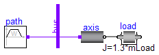
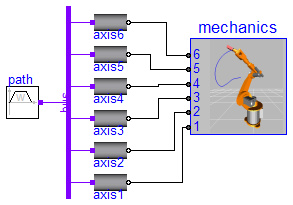

This package contains models of the robot r3 of the company Manutec. These models are used to demonstrate in which way complex robot models might be built up by testing first the component models individually before composing them together. Furthermore, it is shown how CAD data can be used for animation.

The following models are available:
oneAxis Test one axis (controller, motor, gearbox). fullRobot Test complete robot model.
The r3 robot is no longer manufactured. In fact the company Manutec does no longer exist. The parameters of this robot have been determined by measurements in the laboratory of DLR. The measurement procedure is described in:
Tuerk S. (1990): Zur Modellierung der Dynamik von Robotern mit
rotatorischen Gelenken. Fortschrittberichte VDI, Reihe 8, Nr. 211,
VDI-Verlag 1990.
The robot model is described in detail in
Otter M. (1995): Objektorientierte Modellierung mechatronischer
Systeme am Beispiel geregelter Roboter. Dissertation,
Fortschrittberichte VDI, Reihe 20, Nr. 147, VDI-Verlag 1995.
This report can be downloaded as compressed postscript file
from: http://www.robotic.dlr.de/Martin.Otter/publications.html.
The path planning is performed in a simple way by using essentially the Modelica.Mechanics.Rotational.KinematicPTP block. A user defines a path by start and end angle of every axis. A path is planned such that all axes are moving as fast as possible under the given restrictions of maximum joint speeds and maximum joint accelerations. The actual r3 robot from Manutec had a different path planning strategy. Todays path planning algorithms from robot companies are much more involved.
In order to get a nice animation, CAD data from a KUKA robot is used, since CAD data of the original r3 robot was not available. The KUKA CAD data was derived from public data of KUKA available at: http://www.kuka-roboter.de/english/produkte/cad/low_payloads.html. Since dimensions of the corresponding KUKA robot are similar but not identical to the r3 robot, the data of the r3 robot (such as arm lengths) have been modified, such that it matches the CAD data.
In this model, a simplified P-PI cascade controller for every axes is used. The parameters have been manually adjusted by simulations. The original r3 controllers are more complicated. The reason to use simplified controllers is to have a simpler demo.
| Name | Description |
|---|---|
| oneAxis | Model of one axis of robot (controller, motor, gearbox) with simple load |
| fullRobot | 6 degree of freedom robot with path planning, controllers, motors, brakes, gears and mechanics |
| Components | Library of components of the robot |

With this model one axis of the r3 robot is checked. The mechanical structure is replaced by a simple load inertia.
| Name | Default | Description |
|---|---|---|
| mLoad | 15 | mass of load [kg] |
| kp | 5 | gain of position controller of axis 2 |
| ks | 0.5 | gain of speed controller of axis 2 |
| Ts | 0.05 | time constant of integrator of speed controller of axis 2 [s] |
| startAngle | 0 | start angle of axis 2 [deg] |
| endAngle | 120 | end angle of axis 2 [deg] |
| swingTime | 0.5 | additional time after reference motion is in rest before simulation is stopped [s] |
| refSpeedMax | 3 | maximum reference speed [rad/s] |
| refAccMax | 10 | maximum reference acceleration [rad/s2] |
model oneAxis
"Model of one axis of robot (controller, motor, gearbox) with simple load"
import SI = Modelica.SIunits;
extends Modelica.Icons.Example;
parameter SI.Mass mLoad = 15 "mass of load";
parameter Real kp=5 "gain of position controller of axis 2";
parameter Real ks=0.5 "gain of speed controller of axis 2";
parameter SI.Time Ts = 0.05
"time constant of integrator of speed controller of axis 2";
parameter Real startAngle(unit="deg") = 0 "start angle of axis 2";
parameter Real endAngle(unit="deg") = 120 "end angle of axis 2";
parameter SI.Time swingTime = 0.5
"additional time after reference motion is in rest before simulation is stopped";
parameter SI.AngularVelocity refSpeedMax = 3 "maximum reference speed";
parameter SI.AngularAcceleration refAccMax = 10
"maximum reference acceleration";
Components.AxisType1 axis(
w=5500,
ratio=210,
c=8,
cd=0.01,
Rv0=0.5,
Rv1=(0.1/130),
kp=kp,
ks=ks,
Ts=Ts);
Modelica.Mechanics.Rotational.Inertia load(
J=1.3*mLoad);
RobotR3.Components.PathPlanning path(
naxis=1,
startTime=0,
swingTime=swingTime,
angleBegDeg={startAngle},
angleEndDeg={endAngle},
speedMax={refSpeedMax},
accMax={refAccMax});
protected
RobotR3.Components.Bus bus(
naxis=1);
equation
connect(axis.flange, load.flange_a);
connect(axis.bus, bus.axis[1]);
connect(path.bus, bus);
end oneAxis;

This is a detailed model of the robot. For animation CAD data is used. Translate and simulate with the default settings (default simulation time = 3 s). Use command script "Scripts\ExamplesfullRobotPlot.mos" to plot variables.
| Name | Default | Description |
|---|---|---|
| mLoad | 15 | mass of load [kg] |
| rLoad[3] | {0.1,0.25,0.1} | distance from last flange to load mass [m] |
| g | 9.81 | gravity acceleration [m/s2] |
| refStartTime | 0 | start time of reference motion [s] |
| refSwingTime | 0.7 | additional time after reference motion is in rest before simulation is stopped [s] |
| Reference | ||
| startAngles | ||
| startAngle1 | -60 | start angle of axis 1 [deg] |
| startAngle2 | 20 | start angle of axis 2 [deg] |
| startAngle3 | 90 | start angle of axis 3 [deg] |
| startAngle4 | 0 | start angle of axis 4 [deg] |
| startAngle5 | -110 | start angle of axis 5 [deg] |
| startAngle6 | 0 | start angle of axis 6 [deg] |
| endAngles | ||
| endAngle1 | 60 | end angle of axis 1 [deg] |
| endAngle2 | -70 | end angle of axis 2 [deg] |
| endAngle3 | -35 | end angle of axis 3 [deg] |
| endAngle4 | 45 | end angle of axis 4 [deg] |
| endAngle5 | 110 | end angle of axis 5 [deg] |
| endAngle6 | 45 | end angle of axis 6 [deg] |
| Limits | ||
| refSpeedMax[6] | {3,1.5,5,3.1,3.1,4.1} | Maximum reference speeds of all joints [rad/s] |
| refAccMax[6] | {15,15,15,60,60,60} | Maximum reference accelerations of all joints [rad/s2] |
| Controller | ||
| Axis 1 | ||
| kp1 | 5 | gain of position controller |
| ks1 | 0.5 | gain of speed controller |
| Ts1 | 0.05 | time constant of integrator of speed controller [s] |
| Axis 2 | ||
| kp2 | 5 | gain of position controller |
| ks2 | 0.5 | gain of speed controller |
| Ts2 | 0.05 | time constant of integrator of speed controller [s] |
| Axis 3 | ||
| kp3 | 5 | gain of position controller |
| ks3 | 0.5 | gain of speed controller |
| Ts3 | 0.05 | time constant of integrator of speed controller [s] |
| Axis 4 | ||
| kp4 | 5 | gain of position controller |
| ks4 | 0.5 | gain of speed controller |
| Ts4 | 0.05 | time constant of integrator of speed controller [s] |
| Axis 5 | ||
| kp5 | 5 | gain of position controller |
| ks5 | 0.5 | gain of speed controller |
| Ts5 | 0.05 | time constant of integrator of speed controller [s] |
| Axis 6 | ||
| kp6 | 5 | gain of position controller |
| ks6 | 0.5 | gain of speed controller |
| Ts6 | 0.05 | time constant of integrator of speed controller [s] |
model fullRobot
"6 degree of freedom robot with path planning, controllers, motors, brakes, gears and mechanics"
import SI = Modelica.SIunits;
parameter SI.Mass mLoad = 15 "mass of load";
parameter SI.Position rLoad[ 3]={0.1,0.25,0.1}
"distance from last flange to load mass";
parameter SI.Acceleration g = 9.81 "gravity acceleration";
parameter SI.Time refStartTime = 0 "start time of reference motion";
parameter SI.Time refSwingTime = 0.7
"additional time after reference motion is in rest before simulation is stopped";
parameter Real startAngle1(unit="deg") = -60
"|Reference|startAngles| start angle of axis 1";
parameter Real startAngle2(unit="deg") = 20
"|Reference|startAngles| start angle of axis 2";
parameter Real startAngle3(unit="deg") = 90
"|Reference|startAngles| start angle of axis 3";
parameter Real startAngle4(unit="deg") = 0
"|Reference|startAngles| start angle of axis 4";
parameter Real startAngle5(unit="deg") = -110
"|Reference|startAngles| start angle of axis 5";
parameter Real startAngle6(unit="deg") = 0
"|Reference|startAngles| start angle of axis 6";
parameter Real endAngle1(unit="deg") = 60
"|Reference|endAngles| end angle of axis 1";
parameter Real endAngle2(unit="deg") = -70
"|Reference|endAngles| end angle of axis 2";
parameter Real endAngle3(unit="deg") = -35
"|Reference|endAngles| end angle of axis 3";
parameter Real endAngle4(unit="deg") = 45
"|Reference|endAngles| end angle of axis 4";
parameter Real endAngle5(unit="deg") = 110
"|Reference|endAngles| end angle of axis 5";
parameter Real endAngle6(unit="deg") = 45
"|Reference|endAngles| end angle of axis 6";
parameter SI.AngularVelocity refSpeedMax[ 6]={3,1.5,5,3.1,3.1,4.1}
"|Reference|Limits| Maximum reference speeds of all joints";
parameter SI.AngularAcceleration refAccMax[ 6]={15,15,15,60,60,60}
"|Reference|Limits| Maximum reference accelerations of all joints";
parameter Real kp1=5 "|Controller|Axis 1| gain of position controller";
parameter Real ks1=0.5 "|Controller|Axis 1| gain of speed controller";
parameter SI.Time Ts1 = 0.05
"|Controller|Axis 1| time constant of integrator of speed controller";
parameter Real kp2=5 "|Controller|Axis 2| gain of position controller";
parameter Real ks2=0.5 "|Controller|Axis 2| gain of speed controller";
parameter SI.Time Ts2 = 0.05
"|Controller|Axis 2| time constant of integrator of speed controller";
parameter Real kp3=5 "|Controller|Axis 3| gain of position controller";
parameter Real ks3=0.5 "|Controller|Axis 3| gain of speed controller";
parameter SI.Time Ts3 = 0.05
"|Controller|Axis 3| time constant of integrator of speed controller";
parameter Real kp4=5 "|Controller|Axis 4| gain of position controller";
parameter Real ks4=0.5 "|Controller|Axis 4| gain of speed controller";
parameter SI.Time Ts4 = 0.05
"|Controller|Axis 4| time constant of integrator of speed controller";
parameter Real kp5=5 "|Controller|Axis 5| gain of position controller";
parameter Real ks5=0.5 "|Controller|Axis 5| gain of speed controller";
parameter SI.Time Ts5 = 0.05
"|Controller|Axis 5| time constant of integrator of speed controller";
parameter Real kp6=5 "|Controller|Axis 6| gain of position controller";
parameter Real ks6=0.5 "|Controller|Axis 6| gain of speed controller";
parameter SI.Time Ts6 = 0.05
"|Controller|Axis 6| time constant of integrator of speed controller";
Components.MechanicalStructure mechanics(
mLoad=mLoad,
rLoad=rLoad,
g=g);
RobotR3.Components.PathPlanning path(
naxis=6,
angleBegDeg={startAngle1,startAngle2,startAngle3,startAngle4,startAngle5,
startAngle6},
angleEndDeg={endAngle1,endAngle2,endAngle3,endAngle4,endAngle5,endAngle6},
speedMax=refSpeedMax,
accMax=refAccMax,
startTime=refStartTime,
swingTime=refSwingTime);
RobotR3.Components.AxisType1 axis1(
w=4590,
ratio=-105,
c=43,
cd=0.005,
Rv0=0.4,
Rv1=(0.13/160),
kp=kp1,
ks=ks1,
Ts=Ts1);
RobotR3.Components.AxisType1 axis2(
w=5500,
ratio=210,
c=8,
cd=0.01,
Rv1=(0.1/130),
Rv0=0.5,
kp=kp2,
ks=ks2,
Ts=Ts2);
RobotR3.Components.AxisType1 axis3(
w=5500,
ratio=60,
c=58,
cd=0.04,
Rv0=0.7,
Rv1=(0.2/130),
kp=kp3,
ks=ks3,
Ts=Ts3);
RobotR3.Components.AxisType2 axis4(
k=0.2365,
w=6250,
D=0.55,
J=1.6e-4,
ratio=-99,
Rv0=21.8,
Rv1=9.8,
peak=26.7/21.8,
kp=kp4,
ks=ks4,
Ts=Ts4);
RobotR3.Components.AxisType2 axis5(
k=0.2608,
w=6250,
D=0.55,
J=1.8e-4,
ratio=79.2,
Rv0=30.1,
Rv1=0.03,
peak=39.6/30.1,
kp=kp5,
ks=ks5,
Ts=Ts5);
RobotR3.Components.AxisType2 axis6(
k=0.0842,
w=7400,
D=0.27,
J=4.3e-5,
ratio=-99,
Rv0=10.9,
Rv1=3.92,
peak=16.8/10.9,
kp=kp6,
ks=ks6,
Ts=Ts6);
protected
RobotR3.Components.Bus bus(
naxis=6);
equation
connect(axis2.flange, mechanics.axis2);
connect(path.bus, bus);
connect(axis2.bus, bus.axis[2]);
connect(axis1.bus, bus.axis[1]);
connect(axis3.bus, bus.axis[3]);
connect(axis4.bus, bus.axis[4]);
connect(axis5.bus, bus.axis[5]);
connect(axis6.bus, bus.axis[6]);
connect(axis1.flange, mechanics.axis1);
connect(axis3.flange, mechanics.axis3);
connect(axis4.flange, mechanics.axis4);
connect(axis5.flange, mechanics.axis5);
connect(axis6.flange, mechanics.axis6);
end fullRobot;